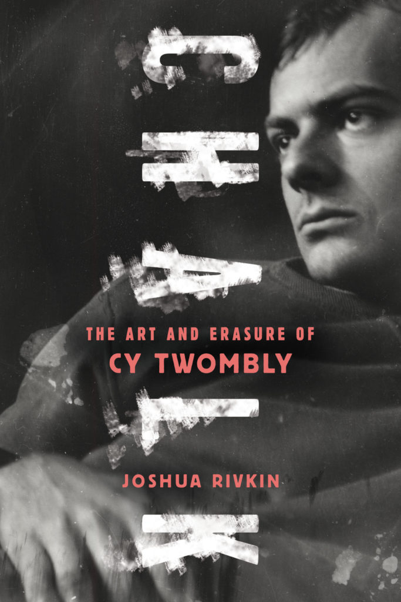

CHALK: THE ART AND ERASURE OF CY TWOMBLY

New York Times Book Review Editors’ Choice
Finalist for the PEN/Bograd Weld Prize for
Biography
Finalist for the Marfield Prize, the National Arts Writing Award
Longlist for The
Believer Book Awards
Kirkus
Reviews Best Arts & Entertainment Book of 2018
Read an excerpt
in Lit Hub
Read a review
in The Paris Review
“A long, haunted letter of unrequited love, and a meta-analysis of true biography’s
impossibility…thrilling.”
Read a review
in the New York Times Book Review
THE FIRST BOOK TO EXPLORE THE LIFE OF CY TWOMBLY, ONE OF THE
MOST IMPORTANT AND INFLUENTIAL ARTISTS OF THE TWENTIETH CENTURY
Cy Twombly was a man obsessed with myth and history—including his own. Shuttling between his stunning homes in
Italy and the United States, where he perfected his room-size canvases, he managed his public image carefully
and rarely gave interviews. Upon first seeing Twombly’s remarkable paintings, author Joshua Rivkin became
obsessed himself with the mysterious artist, and began chasing every lead, big or small—anything that might
illuminate who Twombly really was. Now, after unprecedented archival research and years of interviews, Rivkin
has reconstructed Twombly’s life, from his time at the legendary Black Mountain College, to his canonization in
a 1994 MoMA retrospective; from his heady explorations of Rome in the 1950s with Robert Rauschenberg, to the
ongoing efforts to shape his legacy after his death. Including previously unpublished photographs, Chalk
presents a more personal and searching type of biography than we’ve ever encountered, and brings to life a more
complex Twombly than we’ve ever known.
- REVIEWS
-
“A long, haunted letter of unrequited love, and a meta-analysis of true biography’s impossibility…
thrilling.”
– Catherine Lacey, The
Paris Review
-
“When he is talking about Twombly’s art, or the book’s larger themes of evasiveness and evanescence, you
stop hearing the thwarted reporter and start hearing the poet, who approaches this art as a gold mine of
metaphors and symbols, and finds the experience enrapturing…..propulsive, positive and persuasive.”
– Holland Cotter, The
New York Times
- “A valuable synthesis of what’s been said and written about Twombly, and the author’s lyrical analyses of
Twombly’s paintings are both lovely and insightful.”
—Andrew Martin, Harper’s
Magazine
- “Refreshing … a story well told.”
—Bridget Quinn, Hyperallergic
-
“The book becomes a record of obsessive love without any outlet, dead ends, yearning — themes central to
Twombly…[A] besotted, often very beautiful book.”
– Parul Sehgal, The New York Times
-
“Rivkin brings his sensibility and prowess as a poet and essayist to this unusually reflective, stealthily
dramatic inquiry into the enigmatic life and work of artist Cy Twombly… An extraordinarily involving,
gorgeously written chronicle of art, controversy, fame, and the perils of biography.”
—*STARRED* Booklist
Reader Review
-
“A creative portal into the life of the enigmantic, reclusive, modernist painter… Rivkin’s first
book—impeccably researched, lavishly and lovingly written, insightful and discerning—is a joy to read.”
—*STARRED*
Kirkus Reviews
-
“[A] compelling biography/memoir…Rivkin’s readings of the canvases provides as intimate encounter with the
paintings as can be hoped for in print—and a valuable supplement to the catalogue (or, better yet, to a
visit to the museum)….Indispensable.”
– Jeremy Glazier, Journal
of the History of Ideas Blog
-
“[Rivkin’s] writing about Twombly has, at its center, a deeply personal and, subsequently, moral character
to it that extends beyond academic interest, and into visceral desperation… He is meticulous in tracking
down and interrogating the entire pool of available research, presenting it to the reader in clear, precise
prose… It’s as if the readers, alongside the author, are seeking to solve Twombly, to understand what
motivated him and how he saw the world.”
– Stephen Mortland, Entropy
Magazine
-
“A rewarding excavation into the life of Cy Twombly…A rich prose studded with flashes of poetry… a patient,
loving
exploration.”
– Shawn Rossiter, 15
Bytes
-
“A singular reading experience”
– Nell Berman, Shelf
Awareness
-
“[A]n in-depth exploration of a character that, until now, has existed on the periphery of the history of
modern
art.”
–Sharon Anderson, Marina
Times
-
“Passionate, prismatic biography of talentless fraud Cy Twombly; Rivkin makes Twombly’s story so incredibly
gripping
and revelatory that I was never even briefly tempted to stop reading and Google images of the garbage
Twombly
managed to sell for actual money.”
– Stephen Donoghue, Open
Letters Review, Best Books of Biography for 2018
-
“Reviled when young, revered when old, the elusive Twombly surprisingly emerges in this fascinating
biography, which
traces the difficulties of tracking down the man as thoroughly as it fills in the blurred, half-erased
likeness.
This is the record of a heroic journey of discovery.”
—Edmund White, author of The Unpunished Vice: A Life of Reading
-
“Joshua Rivkin’s sensitive eye and investigative ambition expand and enrich our understanding of Cy
Twombly’s genius
in this tenderly rendered biography.”
—Rachel Corbett, author of You Must Change Your Life
-
“This book is a network of glances, an architecture of mirrors and hallways, all in pursuit of a ‘figure in
the
carpet’ — the mysterious Twombly and the haunting scrawl of his beautiful paintings.”
—Alexander Nemerov, author of Soulmaker: The Times of Lewis Hine
-
“CHALK is so much more than a study of the life and work of the famously-guarded painter Cy Twombly. At its
heart,
this is a book about desire: desire to bridge the distances between ourselves and others, desire to overcome
the
fear of being seen, and underneath it all the desire we all share to be recognized as our true selves by at
least
one person we love. At once both candid and tender, meditative and unsparing, CHALK leads readers on a
journey made
all the more riveting by the narrative impossibility of its premise: a search for the larger-than-life
artist by the
writer who pursues but will never meet him, and the overwhelming need to tell a story written over with
silences.
This book is a gift to Twombly devotees and newcomers alike — as imbued with beauty, genius, and vitality as
the
artist’s work that is its subject.”
—Lacy Johnson, author of The Other Side
-
“Joshua Rivkin’s revelatory Chalk performs an archaeology of a life and explores the layers below those we
think we
already know (or maybe those we never even dreamed existed).”
—R. Tripp Evans, author of Grant Wood: A Life
MEDIA
For press inquiries and bookstore events, please contact
Alexandra Primiani at
Melville House Books
BOOKSELLERS
MEDIA
ACADEMICS & LIBRARIANS